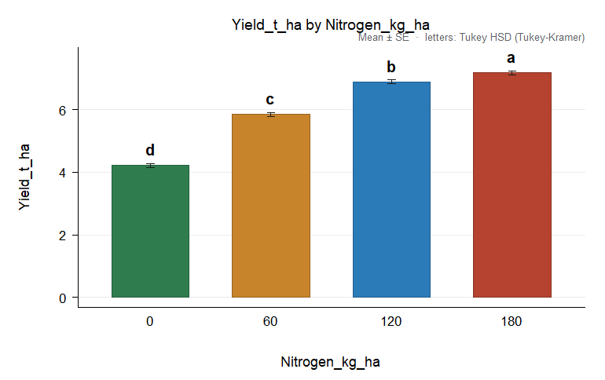
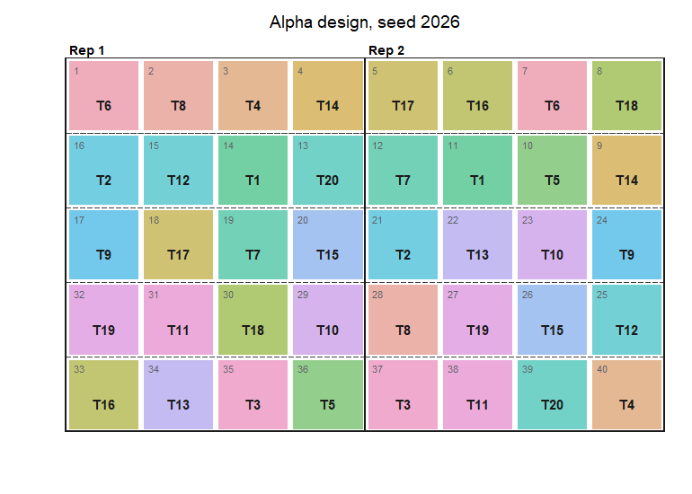

Design and analysis of agricultural experiments in R.
AgriDesign plans and analyses field, greenhouse and laboratory experiments with the classical designs of agricultural research. It tests every term of an analysis of variance against the right error stratum, checks the assumptions, separates means with letters, draws publication figures, writes an HTML report and randomises field layouts. It also covers incomplete block designs with recovery of inter-block information, plant breeding analyses (AMMI, stability, line x tester, diallels, North Carolina designs) and plant pathology tools (AUDPC, AUDPS). It is written in base R only and depends on no other package.
Installation
# development version
# install.packages("remotes")
remotes::install_github("luisangelbg/AgriDesign-R")A first analysis
Maize yield under four nitrogen rates in a randomised complete block design:
library(AgriDesign)
fit <- design_anova(maize_nitrogen, "Yield_t_ha", "Nitrogen_kg_ha", block = "Block")
fit
#>
#> Randomised complete block design (RCBD)
#> Response: Yield_t_ha (n = 16)
#> Type III sums of squares
#>
#> Df Sum Sq Mean Sq F value Pr(>F)
#> Block 3 1.0691 0.35637 21.69 1.864e-04 ***
#> Nitrogen_kg_ha 3 21.5509 7.18362 437.27 4.591e-10 ***
#> Residuals 9 0.1479 0.01643
#> ---
#> Signif. codes: 0 '***' 0.001 '**' 0.01 '*' 0.05 '.' 0.1 ' ' 1
#>
#> Grand mean = 6.03188 CV = 2.12 % R-squared = 0.9935Are the assumptions met?
check_assumptions(fit)
#>
#> Assumptions of the ANOVA for Yield_t_ha (alpha = 0.05)
#>
#> Check Test Statistic df p Rating
#> normality Shapiro-Wilk W = 0.9304 0.2477 ok
#> normality Anderson-Darling A2 = 0.4947 0.1840
#> normality Jarque-Bera JB = 2.303 2 0.3162
#> variances Levene (median) F = 0.5348 3, 12 0.6672 ok
#> variances Levene (mean) F = 4.27 3, 12 0.0287
#> variances Bartlett K2 = 0.1708 3 0.9822
#> variances Fligner-Killeen X2 = 1.314 3 0.7259
#> variances Hartley Fmax Fmax = 1.549
#> additivity Tukey one-degree-of-freedom F = 0.0548 1, 8 0.8208 ok
#> extremes |studentized residual| > 3 count = 0 ok
#> independence Durbin-Watson (data order) d = 2.451 ok
#>
#> Observations with |studentized residual| > 2.5:
#> row group observed fitted studentized
#> 16 180 7.31 7.056 2.646
#>
#> Grade A. Assumptions satisfied. Proceed with the analysis of variance on this scale.Which rates differ?
cmp <- compare_means(fit, "Nitrogen_kg_ha", method = "tukey")
cmp
#>
#> Tukey HSD (Tukey-Kramer), alpha = 0.05
#> Response: Yield_t_ha compared: Nitrogen_kg_ha
#> Error: Residual error (MS = 0.01643, df = 9)
#> Minimum significant difference = 0.2829
#>
#> Nitrogen_kg_ha n mean se raw_mean sd group
#> 180 4 7.182 0.06409 7.183 0.2943 a
#> 120 4 6.885 0.06409 6.885 0.3663 b
#> 60 4 5.845 0.06409 5.845 0.2978 c
#> 0 4 4.215 0.06409 4.215 0.3101 d
#>
#> Means sharing a letter do not differ.
plot(cmp)
The response to nitrogen is quadratic, with its maximum near 180 kg/ha:
trend(fit, "Nitrogen_kg_ha")
#>
#> Trend analysis of Yield_t_ha on Nitrogen_kg_ha (error: Residual error)
#>
#> component coefficients ss F df_error p
#> Linear -3, -1, 1, 3 19.770661 1203.4388 9 6.788e-11
#> Quadratic 1, -1, -1, 1 1.775556 108.0780 9 2.587e-06
#> Cubic -1, 3, -3, 1 0.004651 0.2831 9 6.075e-01
#>
#> Highest significant component: quadratic.
#> Fitted response: y = 4.207 + 0.03323 x - 9.253e-05 x^2 R-squared = 0.946
#> Maximum response at x = 179.5 (y = 7.19); at the edge of the levels testedA complete report, with a methods paragraph ready to adapt, the tables and the figures, in one HTML file:
design_report(fit, "maize-report.html", title = "Nitrogen rates in maize", units = "t/ha")Split-plots and other multi-stratum designs
Each term is tested against its own error: irrigation (main plots) against Error a, varieties and the interaction against Error b. Simple effects use the pooled error with Satterthwaite degrees of freedom:
sp <- design_anova(split_irrigation, "Yield_t_ha", c("Irrigation", "Variety"),
block = "Block", design = "split_rcbd")
sp
#>
#> Split-plot in RCBD (main plots in blocks)
#> Response: Yield_t_ha (n = 24)
#> Type III sums of squares
#>
#> Df Sum Sq Mean Sq F value Pr(>F)
#> Block 2 0.452575 0.2262875 300.05 3.322e-03 **
#> Irrigation 1 7.889067 7.8890667 10460.64 9.558e-05 ***
#> Error a (main plot) 2 0.001508 0.0007542
#> Variety 3 4.836800 1.6122667 3269.95 9.749e-18 ***
#> Irrigation:Variety 3 0.098733 0.0329111 66.75 9.343e-08 ***
#> Error (residual) 12 0.005917 0.0004931
#>
#> Tested against a higher error stratum:
#> Block vs Error a (main plot)
#> Irrigation vs Error a (main plot)
#> ---
#> Signif. codes: 0 '***' 0.001 '**' 0.01 '*' 0.05 '.' 0.1 ' ' 1
#>
#> Grand mean = 7.985 CV = 0.28 % R-squared = 0.9996
compare_means(sp, "Irrigation", by = "Variety")
#>
#> Tukey HSD (Tukey-Kramer), alpha = 0.05
#> Response: Yield_t_ha compared: Irrigation within each level of Variety
#> Error: pooled error [(b-1)Eb + Ea]/b with Satterthwaite df (MS = 0.0005583, df = 10.69)
#> Minimum significant difference = 0.04262
#>
#> Variety Irrigation n mean se raw_mean sd group
#> V1 Drip 3 8.387 0.01282 8.387 0.1823 a
#> V1 Furrow 3 7.277 0.01282 7.277 0.1823 b
#> V2 Drip 3 9.123 0.01282 9.123 0.1716 a
#> V2 Furrow 3 7.900 0.01282 7.900 0.1411 b
#> V3 Drip 3 7.810 0.01282 7.810 0.1706 a
#> V3 Furrow 3 6.853 0.01282 6.853 0.1320 b
#> V4 Drip 3 8.913 0.01282 8.913 0.1818 a
#> V4 Furrow 3 7.617 0.01282 7.617 0.1861 b
#>
#> Means sharing a letter do not differ (letters valid within each level).Planning a trial
lay <- make_design("alpha", trt = 20, k = 4, r = 2, seed = 2026, arrangement = "side")
design_efficiency(lay)[c("E", "upper_bound")]
#> $E
#> [1] 0.6769596
#>
#> $upper_bound
#> [1] 0.7037037
plot(lay)
power_design(cv = 12, diff = 15, t = 20)$replicates
#> [1] 11What is in the package
| Area | Functions |
|---|---|
| Analysis of variance |
design_anova() (16 designs, covariates, transformations), ls_means(), designs()
|
| Assumptions |
check_assumptions(), transformations(), box_cox()
|
| Means |
compare_means() (Tukey, LSD, Bonferroni, Sidak, Holm, Duncan, SNK, REGWQ, Scheffe, Dunnett, Games-Howell; simple effects), waller_duncan(), trend(), test_contrasts()
|
| Rank-based tests |
nonparametric() (Kruskal-Wallis, Welch, Friedman, Scheirer-Ray-Hare, aligned ranks), durbin_test(), waerden_test(), median_test()
|
| Incomplete blocks |
recover_interblock() (REML), design_efficiency()
|
| Planning |
make_design() (16 designs, listed by designs("layout")), field_book(), power_design()
|
| Plant breeding |
ammi(), stability(), line_tester(), diallel(), nc_design()
|
| Plant pathology |
audpc(), audps(), audpc_by_unit(), smith_index(), hatheway_size()
|
| Figures and report |
plot() methods, plot_interaction(), plot_differences(), plot_cell_means(), plot_ss_partition(), plot_field(), save_figure(), design_report()
|
Validation
Every statistic is compared with an independent implementation (base R, established packages, published examples and closed-form results) in the scripts of the validation/ folder of the source repository. See the article Validation for the list of comparisons and for the differences found with other software.